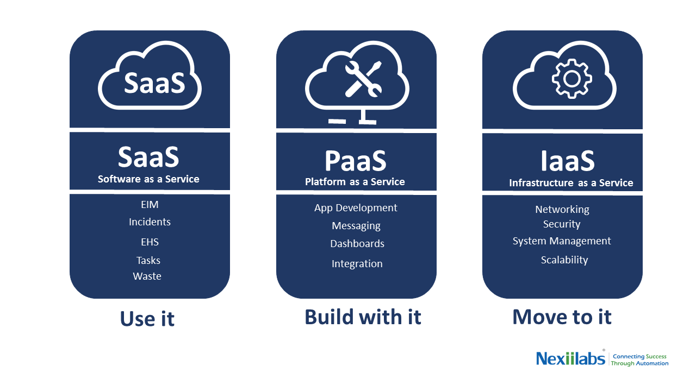

Cloud computing is a very
large term that means little to the users. It basically means “the delivery of
on-demand computing services”. Cloud computing covers a wide range of services
including application design, online storage space to processing power, often
through the internet.
How exactly does cloud computing compete with other
technologies? Think of cloud computing as a warehouse renting service. Instead
of packing everything in your house, which sometimes mean that you run out of
space or cannot fit large objects (large data or services in case of companies),
you can rent these “warehouses” to store your information and data. This simile
means that without spending to set up your own IT infrastructure, individuals,
organizations and companies can save costs by renting from cloud computing
services.
With that in mind, we can see how cloud computing is on the rise
with exponential popularity. Virtually any service now has global or at least
regional markets and clienteles that require fast and spontaneous services.
Therefore, any service that does not require their customer base to have IT
infrastructure can pay for cloud computing services in order to distribute
their products or data storage.
Cloud
computing comes from the “location” of all the software and hardware or
relevant information of users put together in a “cloud” shape, denoting that it
is not necessary to pinpoint where all of these data are located on any
specific IT infrastructure. Instead, the oversimplified term “cloud”
encompasses all of the data like a border.
Cloud Computing Service Models

Cloud Computing can be categorized as
three different service models: Infrastructure-as-a-Service (IaaS),
Platform-as-a-Service (PaaS) and Software-as-a-Service (SaaS). What is the
difference between the three models? IaaS, as the name suggests, rent out IT
cloud infrastructure as a service. The clientele of IaaS are usually companies
or organizations that want to build their applications or products from scratch
and control any associating elements from the get-go. Controlling and
maintaining IT infrastructure for Cloud computing can help with this. On the
other hand, PaaS offers tools and software required to build the applications
the developers need, on top of providing storage, networking, and virtual
servers. Finally, the most common service model, the IaaS. offers the finished
products as interfaces or software that users or clients can access via web
browsers or applications. The hardware or infrastructure that support the
interface or products are irrelevant to the users and clients in the case of
IaaS.
Cloud computing’s increase in
popularity means that it is racking in monumental revenue for the IT world.
Below is an image of the revenue of Cloud computing as a service in billions
from 2016 to projected first quarter 2021, courtesy of zdnet.com: